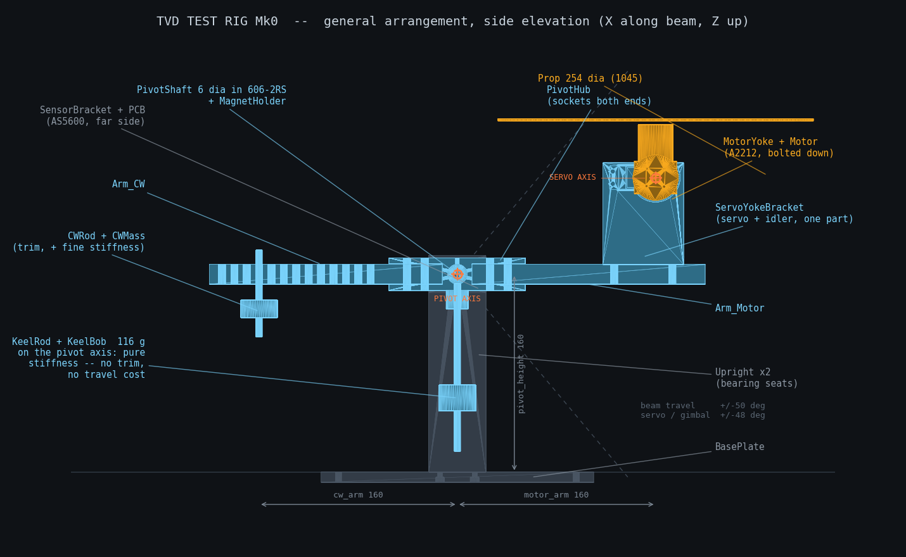
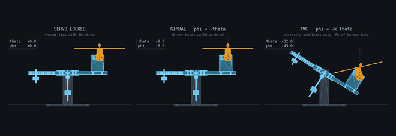

A drink does not spill while the net acceleration vector stays pointed into the glass. So how small can you keep a flying machine's transients — not its cruise, its transients — when someone bumps it?
The problem
The target is a robot waiter: a drone that holds station at bar-top height, carries a full glass to a guest at about human walking pace, and recovers from a bump without spilling a drop. The honest success metric is exactly one thing — no spill. Size, speed and control bandwidth all fall out of it rather than being chosen up front.
That metric turns out to be unusually well-behaved as a requirement, because spilling has a clean physical criterion. The drink stays in the glass while the net acceleration vector — gravity plus whatever lateral acceleration the vehicle is producing — stays pointed inside the freeboard cone. Steady cruise is nearly free: a tilting multirotor auto-aligns a fixed tray with effective gravity. The spill modes are the transients, the angular rates, the bumps, and the drink's own slosh mode.
Why thrust vectoring
A conventional quadrotor produces horizontal force by tilting its whole body. Thrust vectoring produces horizontal force, and rejects disturbances, without a large body tilt — which is precisely an attack on the transient and bump modes rather than on cruise.
There is a subtlety worth stating plainly, because it is the reason the design carries two mechanisms instead of one: keeping the body level does not keep the liquid aligned with effective gravity while accelerating. So the vehicle does both — vectored thrust to keep attitude excursions small and recover from knocks, and an actively stabilised tray that points the cup's "up" along the measured effective-gravity vector, decoupled from the airframe.
Three subsystems, one control problem
| Airframe | Vectored-thrust vehicle: propulsion, structure, avionics, TVC firmware, tethered hover, flight tuning. Obstacle sensing is spill-bounded — braking has to stay inside the acceleration budget, so detection range is set by d = v²/2a. |
|---|---|
| Test Rig | A single-axis pitch rig that validates the control loop on a bench, before anything flies. |
| Gimbal | The no-spill payload: a two-axis tray that tracks measured effective gravity from fused accelerometer and rate-gyro data. |
The reason to treat these as one project rather than three is that they are the same problem wearing different hardware: a one-degree-of-freedom platform-alignment loop. Work on the rig transfers directly to the gimbal and to the airframe, which is also why the aeropendulum came first — same loop, fewer ways to get hurt.
Where it actually is
Test Rig Mk0 — built 6 August 2026 · closed loop since 11 August · plant measured 7–8 September · airframe not started

One mechanism runs three experiments, changed in firmware alone. Lock the servo and drive throttle to angle and it is the aeropendulum analogue. Have the servo track minus theta and it is a one-dimensional attitude-hold gimbal — the tray problem. Have the servo vector the thrust and it is true thrust vectoring.

The rig also exists to characterise a sensor rather than merely to hold one. The shaft encoder is ground truth that a flying drone will never have, so the IMU is deliberately mounted where life is hard — out at the motor saddle, taking roughly seven percent of a gravity in lever-arm acceleration and the worst of the propeller vibration — and measured against the encoder while a fixed pivot still tells the truth.
Build log
-
Open
What is still open, and none of it is a gain
The last two degrees of the twirl are phase lag. The proportional term governs that and has not been re-swept since the derivative filter was tightened; the integral term has never been swept at all. On the bench, the magnet collar still has no axial stop, the fasteners are not threadlocked, and trim can only be set to one side or the other of balance, because a single pin step is coarser than the window it has to land in. Nothing on the airframe or the gimbal has started.
-
10 September 2026
Twirl tracking from 52 to 86 percent, and not one gain moved
The performance take's flourish had been tracking at half its commanded amplitude, and the script's own header blamed rate. The servo was using 22 degrees of a 96 degree range; it was never asked for more. The cause was a feedforward table measured a month earlier at a different thrust and trim, whose own comment carried the expiry date. Rebuilt from the measured plant it tracked to 63 percent, and the beam stopped at exactly the top entry of the table, which showed the remaining deficit was choreography written outside the seventeen degrees the rig can actually reach. Moving the routine into that band gave 86 percent. A calibration constant with a known expiry condition needs a check that fires, not a comment.
-
8 September 2026
Phase B: the plant is fully measured, and the rig is provably better
With throttle pinned and the vector servo stepped through its range, control authority came out flat across the lower half and then fell off a cliff, a twelve-to-one spread; near the top a degree of servo buys a twentieth of a degree of beam. The same day, a scored benchmark against the earlier baseline showed the trim and filter changes had nearly halved hold error and cut the disturbance peak by a third. Opening the servo clamp to the full travel the model clears removed every saturation flag and changed the score not at all. The tempting move to the servo's mid-range, tested rather than argued, made things worse: loop gain moves with thrust, and the hard legs needed their headroom on the other side.
-
7 September 2026
The rig was never trimmed, and that was the ceiling
Released with the motor off, the beam falls to its stop and stays there; the free hang, fitted from four ring-downs, is fifteen degrees below the stop. The stable 2.63 second plant of 6 August described a counterweight position that was never the one built. So the servo was spending almost all of its positive travel holding the rig level before it did any controlling, with under half a degree to spare, which is why every arrest saturated and why more damping made things worse. Moving one counterweight bracketed the imbalance to a single pin step in three minutes with no power on. The same session measured the plant properly for the first time: damping four to eight times higher than every design decision had assumed, and a natural frequency that varies by half across the operating range, so gains tuned at one throttle do not belong at another. The encoder fault that haunted August was diagnosed as the magnet collar creeping a few tenths of a millimetre along the shaft under shock: invisible, the angle unaffected, the field down a fifth. An earlier radial diagnosis, and the sleeve designed from it, were retracted.
-
6 September 2026
Desk session: the benchmark was measuring the wrong thing
The step test scored settling by averaging over the whole dwell, which averaged the transient away; a quarter-second rise followed by a five second settle had never surfaced because the number could not show it. Rewritten to measure the transient. A second finding, from the archived data: the operating-throttle search re-trims every pass against a sagging battery, which is right for the controller and destroys the measurement, since a loop that rejects a disturbance also hides it from anything downstream that wanted to see it.
-
12–13 August 2026
Teach by demonstration, then a pause
Move the beam by hand with the motors off, and the rig flies the path back. Iterative learning took the match from 1.55 to 0.87 degrees RMS over ten passes, and over the body of the routine the residual sat at the measured non-repeatable floor: no learnable error left, and the floor was mechanical. The first learning run diverged, and the cause was an unstable update law rather than noise, which the pass-to-pass correlation settled. Two fasteners worked loose in one evening, reframing a magnet problem as a rig-wide vibration problem. A fresh battery destabilised a loop tuned on a tired one, because loop gain scales with thrust. A fifteen-second performance take was approved. Then the project paused for the semester, and its logger, left pointed at a temporary filesystem, filled it and took down an unrelated service.
-
11 August 2026
Closed loop flying; the encoder was failing all session
Sensors mounted, encoder alive, first plant measurement, and by night the rig held a commanded angle to two tenths of a degree, with the loop on the microcontroller rather than over the network, whose round trip would characterise the network instead of the rig. The air gap measured three millimetres against a modelled one and a half, because the collar's lid thickness had been read from another project's CAD rather than from the part. An angle guard referenced to wherever tare was last pressed, rather than to a physical datum, cut the motor ten degrees before level and cost an hour. And at ten in the evening the encoder's gain turned out to have been railed the entire session on a displaced magnet, reseated by hand while checking something else. Everything absolute from that day went back on the suspect list; the rankings within a run survived.
-
10 August 2026
Both sensor mounts done, on pegs
Both boards mount on printed pegs with no screws near either: the IMU on mushroomed pegs, permanently, and the encoder on pegs with a retainer ring, because ground truth has to come off the rig again. A new printer constant fell out: pegs at two to three millimetres print at their modelled diameter, which does not contradict the round-feature bloat measured earlier, since that was a caliper maximum catching the seam and a hole finds the narrow axis. The sensor bracket, when questioned, turned out to have no working fastening, both parts carrying clearance holes so the screw threaded into nothing.
-
6 August 2026
Rig assembled; both sensor ends parked
Seven parts printed and assembled. Trim closed on two sliding carriages carrying a hundred grams each; the plant came out stable with a 2.63 second period at 944 grams. Travel is asymmetric — plus fifty degrees, minus forty-two — which was accepted rather than fixed, since the gimbal experiment does not use the last eight degrees.
-
5 August 2026
Six tolerance classes validated on real parts
Every fit on the rig is now a measurement rather than a prediction, taken from printed coupons instead of from a datasheet. The one that cost a cycle to learn: flat and round features do not bloat by the same amount on this printer, and applying the round figure to a flat face over-opened a socket enough to hide a fifth of a degree of encoder-blind play.
-
4 August 2026
A servo that did nothing for a day
Three swapped servos, four probe firmwares and a multi-pin sweep, against a part that measured correct at every point and would not move. The cause was the external supply's ground never being bonded to the circuit ground. Supply voltage was a red herring in both directions. When a servo does nothing, check the ground bond before anything else.
-
2–3 August 2026
Parametric model, and three defects the checkers caught
The rig is driven by a single parameter sheet, so one cell edit propagates through every mating feature. Automated checks then found three real faults: travel is set by the counterweight rather than the beam; screw heads fouled a pocket that a parts-versus-parts check is structurally blind to; and the propeller struck the hub through the servo's sweep, which a rigid-body travel check can never see. Each blind spot had the same shape — the checker only sees what it is told to move.
-
27 June 2026
Requirements written; project deliberately parked
The error budget put the design point at three millimetres of freeboard, giving about 5.7 degrees of spill tolerance, and a budget of no more than three degrees of residual liquid tilt — carried almost entirely by gimbal tracking error. Then the whole project was parked to finish the aeropendulum first, on the grounds that it is the same control loop and therefore the foundation rather than a detour.
Every number above is a measurement or a decision, not a projection. Where a figure is still a first-pass estimate — glass radius, fill freeboard, slosh frequency — it is marked as such in the requirements and is waiting to be replaced by a measurement.
Related Work
The same one-degree-of-freedom loop, closed sim-to-real. This is the competency the drone is built on.
The same habit of printing a thing, flying it, and letting the measurement correct the model.